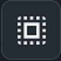
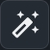
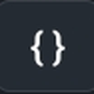
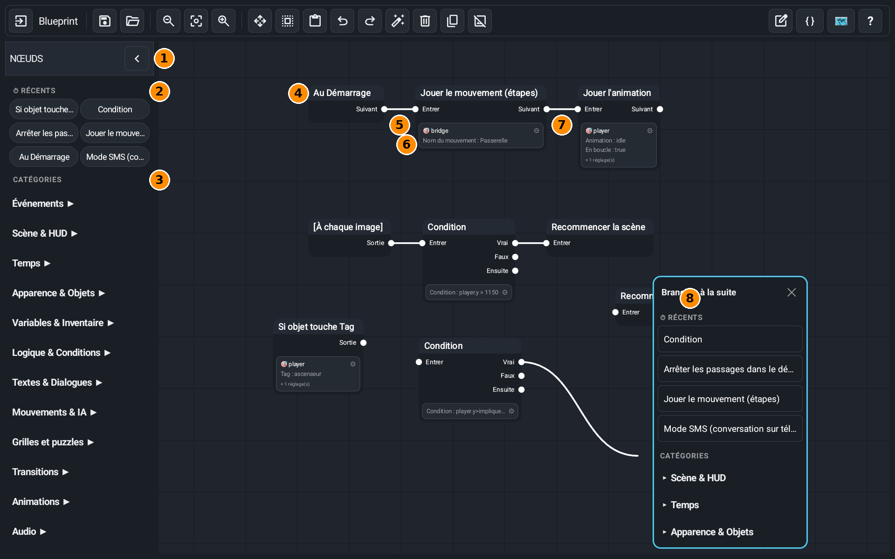
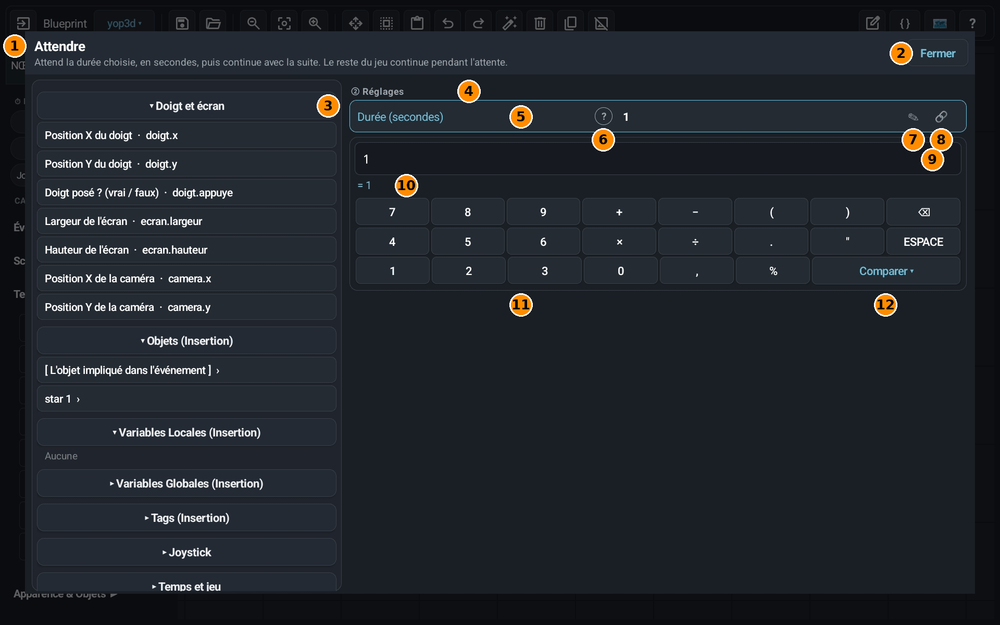

Blueprint は、ノードをつないでゲームに「何をするか」を伝える画面です。このガイドはゲームの作り方ではなく、各ボタンと画面の各部分の役割を説明します。エディターの Blueprint ボタンから開きます。
上のバー
左から右へ：
- エディターに戻る
Blueprint を閉じてシーンに戻ります。作業は自動で保存されますが、戻る前に 💾 をタップしても構いません。 - 保存
ノードをプロジェクトに保存します。 - 最後の保存を読み込み直す
最後に保存した状態に戻します。注意：それ以降に変更した内容は失われます。 - ズームアウト
ノードが小さくなり、たくさん見えます。2 本の指でつまんでも同じです。 - 標準ズーム
ズームを 100% に戻します。 - ズームイン
ノードを大きく表示します。 - 移動のみ
オン（青）のときは、ノードをタッチすると動かすだけになります。うっかり線を切ったり設定を開いたりしません。ノードが近くに並んでいるときに便利です。 
複数のノードを選ぶ
何もない所で指をなぞってノードを囲みます（1 つずつタップしても OK）。下にバーが出て、コピーや削除ができます。まとめて動かすこともできます。- 貼り付け
コピーしたノードを貼り付けます。別のシーンや別のプロジェクトでも使えます。ドラッグして位置を決め、「置く」をタップします。 - 元に戻す
1 つ前に戻します（50 回まで）。 - やり直す
元に戻した操作をもう一度行います。 
ノードを整理
自動で整理します。各イベントが左から右への 1 列になります。↶ で元に戻せます。- 選んだノードを削除
先にノードをタップして選び、このボタンを押します。 - 選んだノードを複製
ノードを設定ごとコピーします。 - 選んだノードを折りたたむ / 開く
ノードをタイトルだけ（[...]）に縮めて場所を空けます。もう一度押すと開きます。 - Blueprint をテキストで読む
ノードを読みやすい文章で表示し、ゲームが何をしているか読み返せます。 
スクリプトを取り込む
テキスト（{ } 形式）からノードを追加または置き換えます。上級者向けです。- ストーリーマップ
会話ゲーム用：物語の各パート、選択肢、エンディングを一覧できます。 - ヘルプ
すべてのノードの一覧を開きます。各ノードに説明と例があります。
👉 画面が小さいときは、バーを指でスライドして最後のボタンまで見られます。プロジェクトにシーンが複数あると、タイトルの横にシーン名のボタンが出ます。Blueprint を閉じずにシーンを切り替えられます。
画面をひと目で

- 1一覧をたたむと、画面が広くなります。
- 2最近使った：最近使ったノード。すぐ見つけられます。
- 3カテゴリー：カテゴリーをタップするとノードの一覧が開き、ノードをタップすると画面に置けます。
- 4ノード：1 つのことをするブロックです。起動時のような開始ノードはイベントで、これがないと何も始まりません。
- 5丸：左が入口（入力）、右が出口（次へ）。出口を入口につなぐと「そのあとこうする」になります。
- 6ノードの枠：設定の要約（どのオブジェクトか、どんな値か）です。タップすると変更できます。
- 7線：ノードが実行される順番を示します。条件には出口が複数あります：真、偽、つぎに（どちらのあとにも続く流れ）。
- 8線を何もない所で離すとノード一覧が開き、選んだノードがその場に置かれてすぐつながります。
👉 ノードの働きを知りたいときは、上のバーの ? ボタンをタップします。すべてのノードが 1 つずつ説明された一覧が開きます。
ノードの設定ウィンドウ
ノードの枠をタップする（またはノードを置く）と、そのノードの設定ウィンドウが開きます。これは 待つ ノードのものです。

- 1ノードの名前と、その下に、何をするかを説明する 1 文があります。
- 2閉じる：ウィンドウを閉じます。変更は保たれます。
- 3左のリスト：値に入れられる、できあがりの部品です。折りたためるグループに分かれています：指と画面、オブジェクト (挿入)（シーンのオブジェクトとその設定、たとえば位置）、変数、タグ、ジョイスティック、時間とゲーム。各行にはわかりやすい名前と短いコード（doigt.x など）が出ます。タップすると、入力欄のカーソルの位置に書き込まれます。
- 4設定：ノードのすべての設定が行で並びます。ノードがオブジェクトを指定するときは、上に 何に？ の部分が出て、どれかを選べます。
- 5設定の行：左に名前（ここでは秒単位の長さ）、右に値。行をタップして変更します。
- 6「?」：設定を説明し、タップして選べる値を示すヘルプの吹き出しです。
- 7えんぴつ：行の下に入力エリアを開きます。ほかの設定では、矢印（リストから選ぶ）か「はい / いいえ」が出ます。
- 8チェーン：値を打つかわりに、それを計算する緑のノード（ランダムな数、オブジェクトの位置、変数など）をつなぎます。
- 9入力欄：ここに値（数字、または簡単な計算）を書きます。
- 10結果：最終的な値（ここでは「= 1」）。必要なときは「ことばで言うと」の行が式を説明します。
- 11キーパッド：数字と記号（+ − × ÷ など）、スペース、消しゴム。スマホのキーボードなしで入力できます。
- 12比べる：比べる記号（> < ≥ ≤ = ≠）と、かつ / または / ではない / はい / いいえ の言葉を開きます。条件に使います。